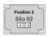
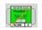
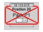
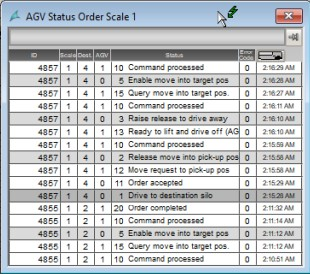

Using the SCADA AGV Screen
SBS-OP-123
Revised: 2024-02-15
Purpose/Application
Describes the procedure for how to use the SCADA AGV screen.
PPE Required
General
Bump cap/hard hat, safety glasses with foam liner, proper hearing protection, fire-resistant long-sleeved shirt, safety toe boots.
Additional Equipment
Have a respirator or PAPR available in the event of silica release.
Safety Hazards
Safety Controls
- The Hazard Communication Standard (HCS) requires chemicals to have Safety Data Sheets (SDS). Use the SDS for chemicals listed in this SOP for additional hazards, first aid measures, toxicological information, accidental release measures, and handling/storage of the chemical.
- Review the Emergency Action Plan before performing work.
Equipment Needed
- Access to the SCADA SBS workstation.
Comments
Before starting work:
- Read this document thoroughly.
- Complete the required training.
- Wear the required PPE.
This SOP uses Streator screens and images.
Related Resources
- SBS-OP-121 Operating the AGV
Monitoring the AGV
At the “Batch System - Status AGV” screen, the operator can check the status and position of the AGV devices.
Upper Area of the Status AGV Screen
In the upper area of the screen is a top-view of the AGV fenced area, and the current position of the AGV (under one of the 10 silos, at the Lifting Station, or parked). This makes it possible to know the exact location of the AGV as it moves.
- Each position shows the amount of time the AGV stood there for the last cycle.
- The current AGV position is shown in blue.

- Green means a position is blocked by a scale/weighing frame, but the AGV can pass

under it. - A red X means that a parking position is blocked.
Popup Window for Each Position
Press on a position to display a popup window that provides additional position information.

|
Position Status – Color shown on the popup |
Description (Note that these colors do not match the colors used for the AGV screen itself) |
|---|---|
|
|
The position is free and the AGV (with a scale container) can move to this position. |
 |
The position is blocked by the operator. The AGV (with a scale container) cannot go to this position. |
 |
The docking station for this position is not in the upper position, and the AGV (with a scale container) cannot pass this position. |
 |
This position is blocked for the AGV, and the AGV cannot go to this position. |
The three buttons at the top of the popup are explained below.
|
Button |
Function |
|---|---|
|
|
The standard popup window is shown, without the parameters panel. |
|
|
The position parameters panel is displayed. (See details below.) |
|
|
Alarms and messages for this position can be viewed. |
Position Parameters Panel
When the Position Parameters button is pressed on the popup window, two parameters can be set.
- The operator can “block” or “free” the position by pressing the appropriate button.
- The “stay time” parameter allows the operator to enter a time for the maximum stay of the AGV at this position. If the AGV needs longer at this position than the defined maximum stay time, a warning message is displayed.
Lower Area of the Status AGV Screen.
The lower area is described in three parts. The left part, the middle part and the right part

Left Part: The operator can change the AGV operation mode by pressing Manual or Auto. The icon above the buttons indicates whether the AGV is operating in Manual or Auto mode.

-
In Automatic mode, the PLC program controls the movement of the AGV. -
In Manual mode, the operator moves the AGV.

Press yes to confirm.
In Manual mode, the operator can direct the AGV to move scale 1 and scale 2 to a specific position.
- To do this, press the “down button on the right of the scale name. A dropdown box opens. (See left image below.)
- When a destination is selected, the dropdown box closes and the selection appears in the text box. To send the AGV and scale to its destination, press the “Scale ‘x’ to Pos ‘y’ ” button. The AGV then waits there for its next command. (See the right image below.)

Middle Part: In the middle part, the current or last executed command for the AGV is displayed, assigned to scale 1 or scale 2.
|
Section |
Description |
|---|---|
|
ID |
Shows the ID of the order. |
|
Scale |
Shows which scale is processing the order. |
|
Dest. |
The destination position of the order. |
|
AGV |
The number of the used AGV for this order. |
|
Status |
Shows the order status as text. |
|
Error-Code |
If the AGV reports an error to the system, the specific error number is shown here. |
|
Time |
The time where the AGV processed the status. |
 |
With this button the order on the left side can be deleted. When the order is deleted the AGV will not do this order. |
 |
By pressing the “History”-Button, a popup appears,
showing table of the last order-ID’s. This view can be extended by pressing
the “Extend” button
 |
segment has two buttons.
- Press the “History” button to display a graphic chart of the X/Ycoordinates (lower left image).
- Thehistorical movement (position) of the AGV is stored, and can be used to check the positioning accuracy.
- Press the “clock” button to open the “Time- Selection” dialog

box to select a specific time range (lower right image).
pressed, the following popup window is opened.
- On the left side of the popup is a list with the latest status messages of the AGV.
- On the right side is a table with the latest AGV alarms.

For further information regarding the operation system for AGV, refer to documents:
- “AGVProcess-diagram_rev2.pptx”“HEGLA HANIC DOCUMENTATION AGV_englisch.pdf”.
- GLA HANIC DOCUMENTATION AGV_englisch.pdf”.
ATTENTION: DO NOTCHANGE ANY VALUES IN THE HEGLA HANIC SYSTEM WITHOUT CONSULTING ZIPPE. This is only for better understanding of the system. Any modifications in this program may risk process safety
Approval
|
Person |
Role |
|---|---|
|
Michael Hu |
Process Development Squad Lead |
|
David Jepsen |
Melter Training Specialist |
|
Phillip Wilson |
EHS Continuous Improvement Manager |
Revision History
|
2024-02-15 |
Approved by Michael Hu, Process Development Squad Lead |
|
Original Issue |